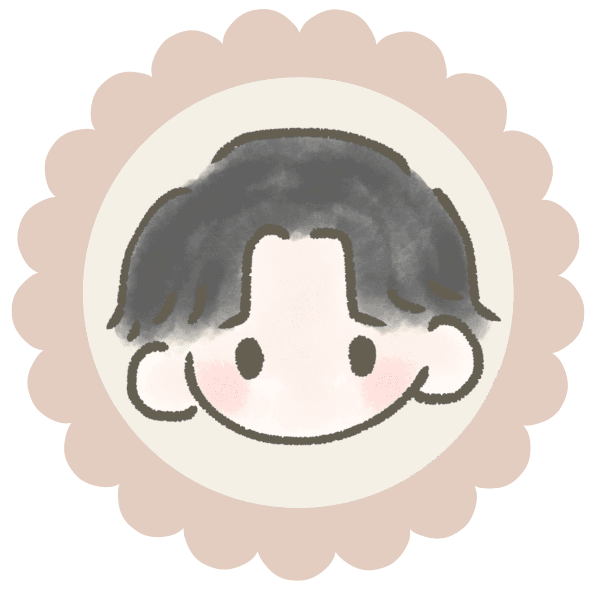
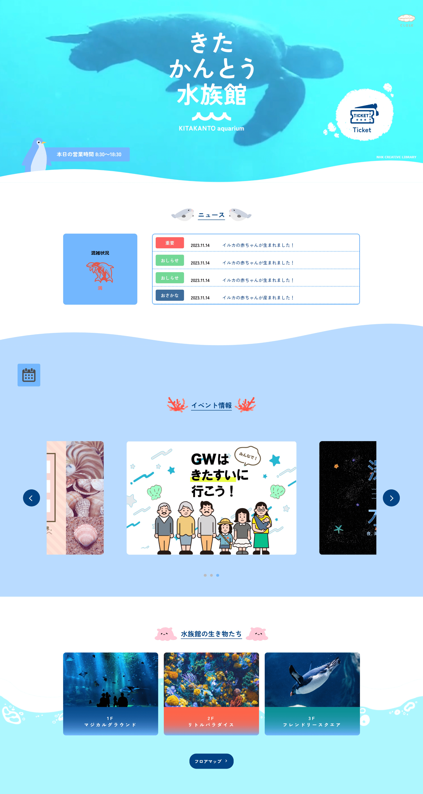
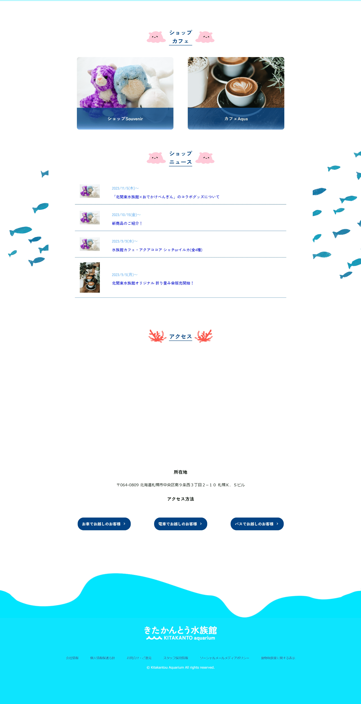
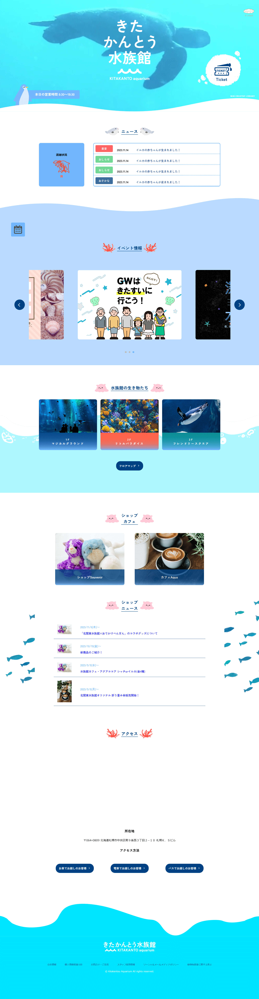

制作物
✖️
きたかんとう水族館(チーム制作)



・学校でのチーム制作で作成しました。
・TOPページ、ニュースの部分のデザイン、コーディングを担当しました。
・迫力や実際の水族館の想像がしやすくなるかと思い、TOPページには画像ではなく動画を採用しました。
・子連れの方に来ていただける、柔らかい印象のサイトという希望だったので、イラストを多く使用し、可愛らしい雰囲気にしました。
2つ目モーダルウィンドウです。ここにモーダルウィンドウで表示したいコンテンツを入れます。モーダルウィンドウを閉じる場合は下の「閉じる」をクリックするか、背景の黒い部分をクリックしても閉じることができます。
閉じる